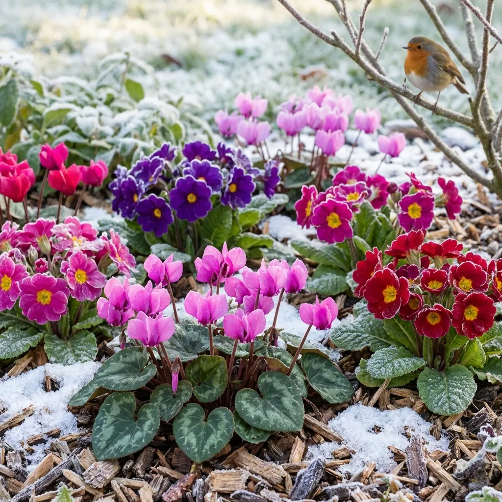

Peyzaj sadece bahar ve yaz aylarının eğlencesi değildir. Doğru bitki seçimi ve bakımla, kışın en soğuk günlerinde bile bahçenizde renk cümbüşü yaratabilirsiniz.
1. Kışın Çiçek Açan Kahramanlar
Ege'nin ılıman kışında çok şanslıyız. Çuha Çiçeği (Primula), Siklamen ve Hercai Menekşe kış aylarının vazgeçilmezleridir. Ayrıca Kış Ortancası (Bergenia) ve Noel Gülü de dayanıklı yapılarıyla bahçenizin boş kalmasını engeller. Bu bitkiler -5 dereceye kadar dayanabilir ve gri gökyüzüne inat rengarenk açarlar.

2. Don Koruması (Malçlama)
Bitkilerinizin köklerini soğuktan korumanın en etkili yolu "Malçlama"dır. Ağaç diplerine çam kabukları, kuru yapraklar veya saman sererek bir yorgan etkisi yaratabilirsiniz. Bu hem toprağın nemini korur, hem yabani ot çıkışını engeller, hem de ani don olaylarında köklerin üşümesini durdurur. Özellikle yeni dikilmiş fidanlar için bu işlem hayati önem taşır.

3. Sulama Dengesini Ayarlamak
"Kışın sulama yapılmaz" algısı yanlıştır. Yağışsız geçen haftalarda, özellikle yaprak dökmeyen ağaçlarınızı sulamayı ihmal etmeyin. Ancak sulama işlemini sabah saatlerinde yapın ki gece don olayında köklerde buzlanma olmasın. Toprağın donduğu günlerde kesinlikle sulama yapmayın.
4. Budama Zamanı ve Tekniği
Kış ayları (özellikle Şubat sonu), güller ve meyve ağaçları için ideal budama zamanıdır. Bitki uykudayken yapılan budama, baharda daha güçlü sürgünler vermesini sağlar. Kuru, hastalıklı ve birbirine sürtünen dalları temizleyerek ağacın iç kısmının güneş almasını sağlayın. Kesim yaptığınız yerlere "aşı macunu" sürmek, bitkiyi hastalıklardan korur.
Tüm Yazılara Dön